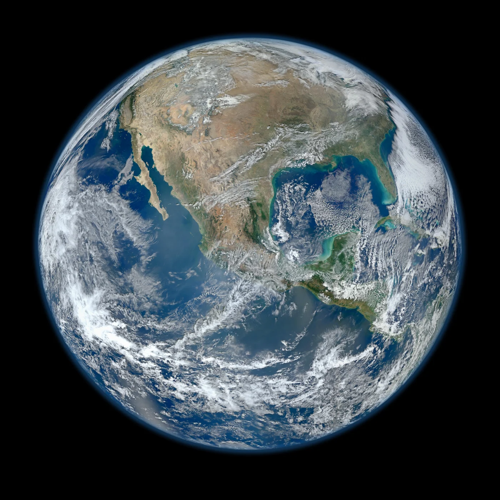

A SMALL CITY. A SHARED PLANET.
府中から、
宇宙へ。
水と資源の循環で、
人と地球の未来をつくる。
この街の仕事は、世界とつながっている。
さあ、地球に触れて、その先へ。
ORIGIN: FUCHU, HIROSHIMA 34.57° N / 133.23° E

BEYOND EARTH宇宙の暮らしを支える構想
ドラッグで回転 · 地域を選んで探索
地球を準備しています…
地図上の点は地域の目安です。線は構想上のつながりを表しています。
TOUCH THE FUTUREOGAWA ECONOS · REBRANDING CONCEPT
LOCAL ROOTS.●GLOBAL CIRCULATION.●BOUNDLESS POSSIBILITIES.
THE CIRCULATION IS IN YOUR HANDS.
触れる。つながる。
未来が、めぐりだす。
水も、資源も、私たちの暮らしも。
ひとつを動かすと、世界はつながっていく。
５つの要素に触れてみてください。
クリックで発見。ドラッグで、つながりを動かす。
５つのつながりを探してみよう。
※事業と将来構想のつながりを表した概念図です。
01OUR ORIGIN
すべては、
この街の
暮らしから。
いつもの朝。きれいな水。
安心して働ける街。
その当たり前を支える仕事が、
地球の未来につながっています。
府中・福山・尾道で培った経験を起点に、
地域の暮らしと産業を支え、循環の可能性を広げていく。
それが、オガワエコノスの挑戦です。

02OUR BUSINESS
めぐる力を、
未来の力に。
水をきれいにする。資源をつなぐ。
エネルギーや土へ、新しい価値を生む。
暮らしと産業の間に、次の循環をつくります。
03OUR FRONTIERS
この街の経験に、
限界をつくらない。
地域から全国へ。世界へ。そして宇宙へ。
大切にするのは、どこにいても
人と自然が豊かに生きられること。
LOCAL KNOWLEDGE.WIDER IMPACT.
ACROSS BORDERS.
TOGETHER.
TOGETHER.
04OUR PEOPLE
循環を動かすのは、
人だ。
一つひとつの判断。毎日の積み重ね。
未来をつくる力は、現場にある。

THE PEOPLE BEHIND THE CIRCULATION.
あなたの仕事が、
地球の未来につながっている。